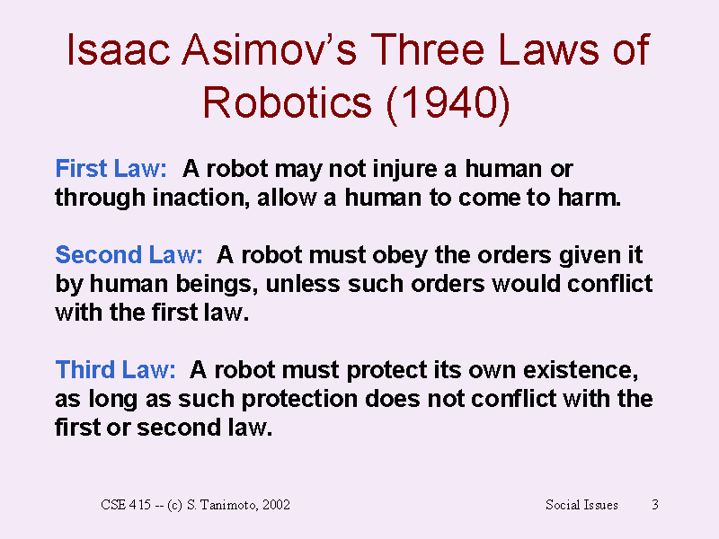
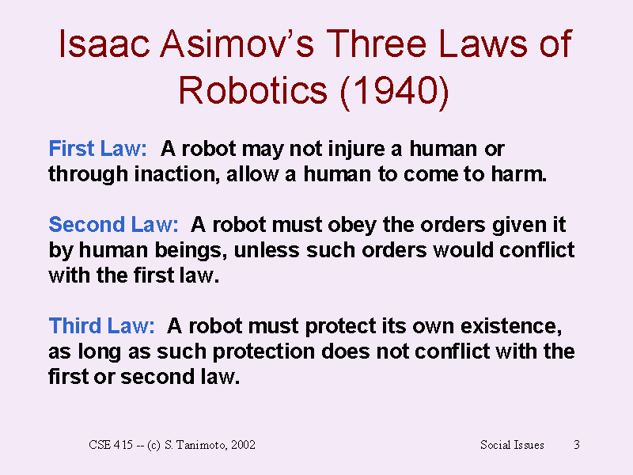
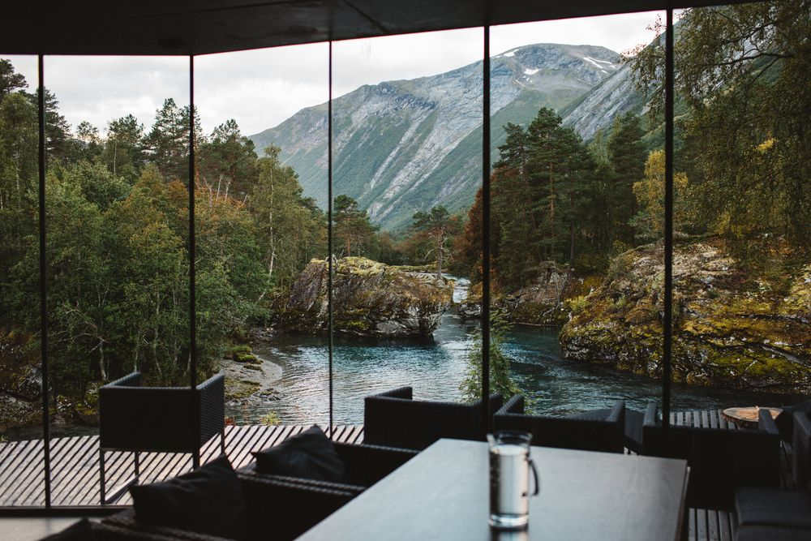
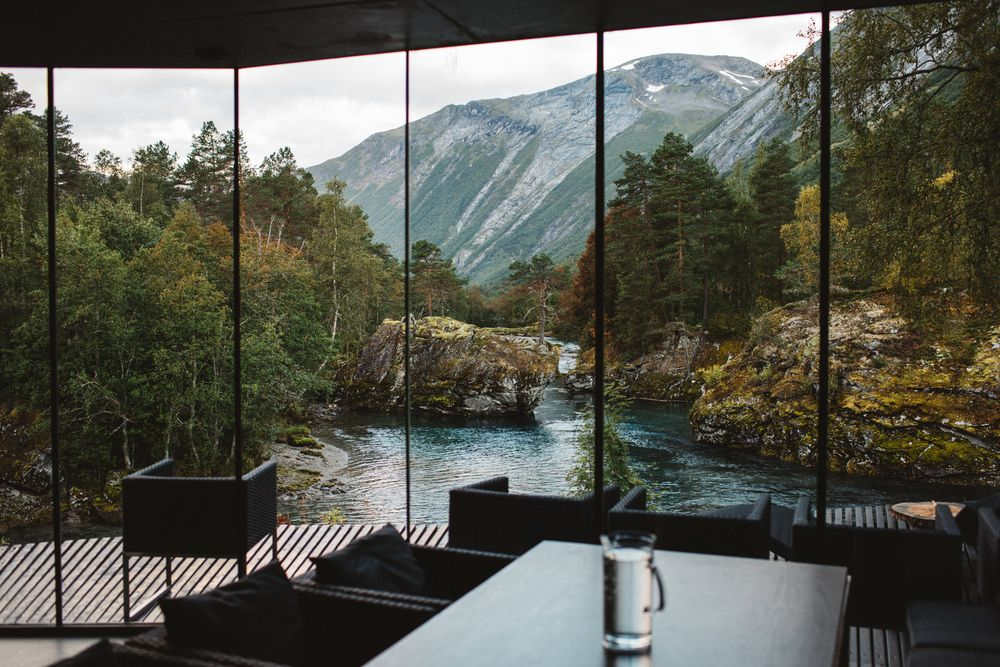

I am a design and technology enthusiast with passion for entrepreneurship. My life takes place somewhere between Europe and the US and somewhere between the physical and the virtual. I could not live without music and sports. I seek meaning, both visually and intellectually. I research and write about things on Living Brand and I am currently building Along. My mantra is "to be is to do".
üëã ¬† Want to talk?
Get in touch
Thank you! Your submission has been received!
Oops! Something went wrong while submitting the form.
Me / Frederik Roman Carlo
Thank you! Your submission has been received!
Oops! Something went wrong while submitting the form.
Index / Topics
Things
Living Brand: A lab for living
It is a living thing with Julian
It is a living thing with Julian
Blockchain, defi, and web3
Excited about this future
Excited about this future
A little bit of music
‍A playlist I keep updating
‍A playlist I keep updating
Sonara: Creating experiences
‍A lifestyle brand in NYC
‍A lifestyle brand in NYC
A lifelong athlete
‍Need the daily adrenaline dose
‍Need the daily adrenaline dose
Path
Building Along
‍Software for the future of work
‍Software for the future of work
Technology innovation
‍Studying at KTH
‍Studying at KTH
Growing a B2B marketplace
‍Expanding a startup in the US
‍Expanding a startup in the US
Architecture in San Francisco
‍Design addicted since art school
‍Design addicted since art school
Building a digital fashion brand
‍Mepadi in NYC
‍Mepadi in NYC
Football was my first love
‍All I wanted to do was to play it
‍All I wanted to do was to play it
My hippie parents are buddhists
‍I grew up in a mindful home
‍I grew up in a mindful home
Writing
Living Brand publication
‍I write on Medium
‍I write on Medium
Q1-2022
‍Digesting 1/4 of this year
‍Digesting 1/4 of this year
2021
‍Digesting the year
‍Digesting the year
Pont de Jardin
‍Green space for Paris
‍Green space for Paris
Who am I?
‍A little intro from 2018
‍A little intro from 2018
Sidewalk Tunnel
‍A transitional space
‍A transitional space
Thank you! Your submission has been received!
Oops! Something went wrong while submitting the form.
Moods / Images


 


 
